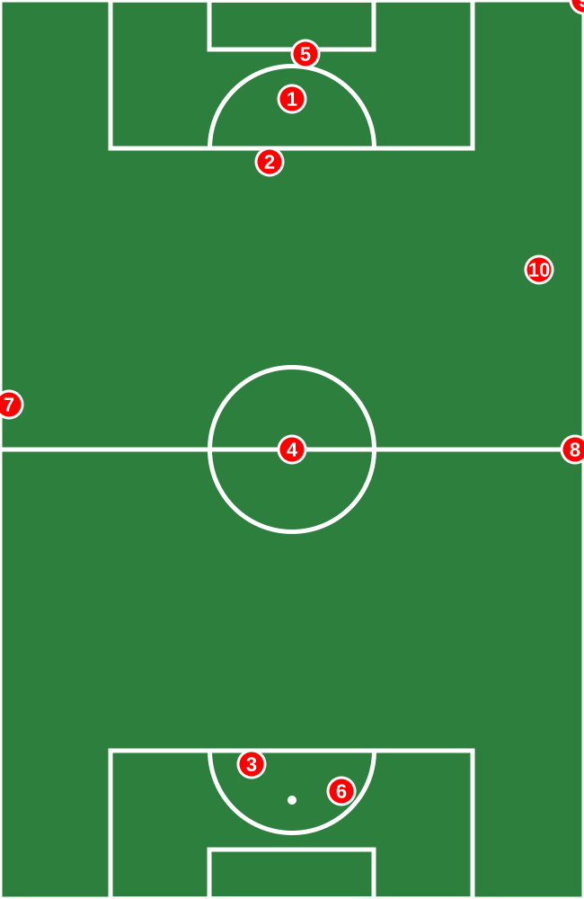

North London Football Memory
Highbury Archive
Matchday Atlas
Highbury goals, moments, and commentary.
Click a numbered location on the pitch to open the event details and, where available, play the original commentary clip with minimal delay.
Arsenal red
Highbury gold
Archive audio
Events
0
Audio clips
0
Club Identity
Red, gold, cannon, marble halls.
The interface leans into Arsenal heritage while keeping the interactive map fast, lightweight, and ready to grow with more moments.

Interactive Pitch
Highbury goal map
